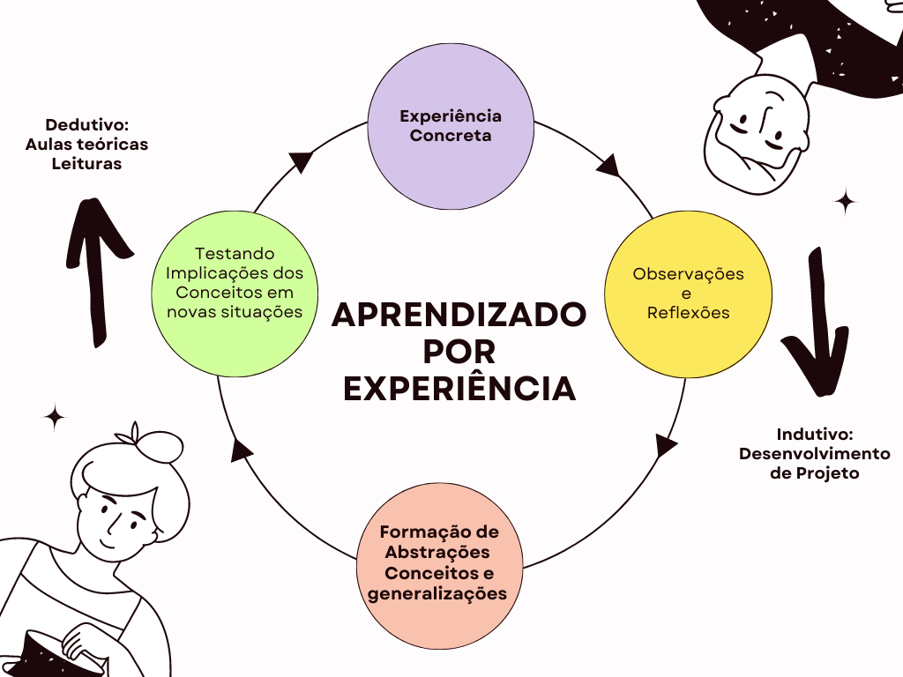
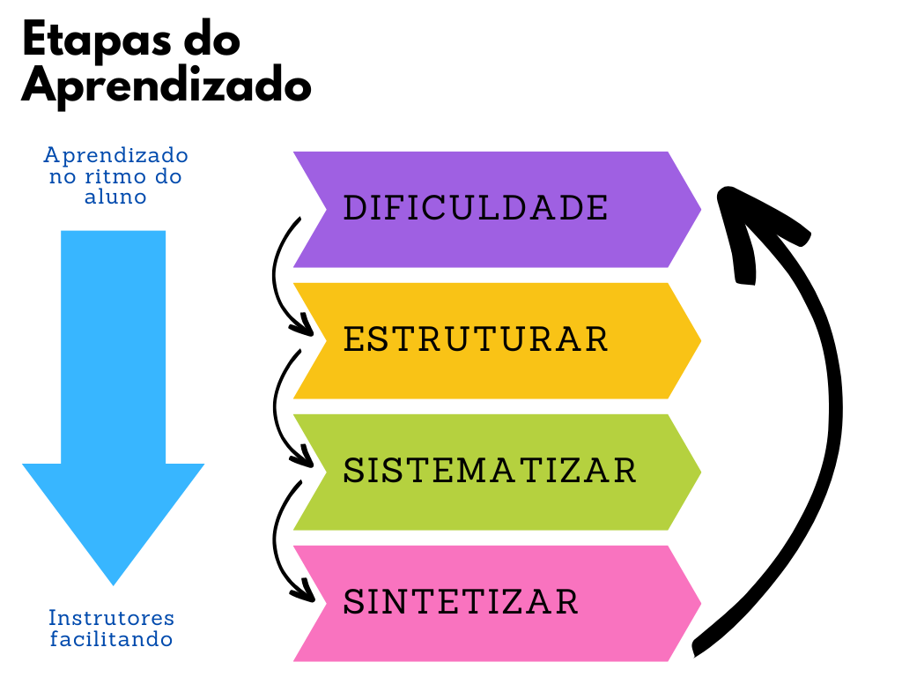

Aprendizado orientado à Experiência - Princípios básicos
Aprendizagem orientada a experiência e aprendizagem orientada a projetos são abordagens de ensino cada vez mais utilizadas na área de engenharia de software e métodos ágeis. Essas abordagens colocam o estudante no centro do processo de aprendizagem, permitindo que ele vivencie situações reais e desafiadoras de desenvolvimento de software. Quando combinadas com o desenvolvimento de um projeto open source e padrões de comunidades open source, essas abordagens oferecem ainda mais benefícios para a formação dos estudantes.
A aprendizagem orientada a experiência permite que os participantes aprendam de forma significativa e duradoura. Em vez de apenas receber informações teóricas, eles são colocados em situações reais de aprendizado, em que podem aplicar os conceitos teóricos aprendidos e vivenciar na prática os desafios enfrentados na área de engenharia de software.
O modelo de referência importante para a construção de um curso eficaz é o modelo de aprendizagem experiencial de David Kolb (Figura 1). Esse modelo sugere que os alunos precisam passar por uma “jornada de descoberta”, onde eles sentem que ganharam a compreensão da lição por meio do processo experiencial de chegar lá. O ciclo de Kolb é composto de quatro etapas principais:
- Experiência concreta: é a fase inicial, onde os participantes são expostos a uma experiência real e concreta, no nosso caso, um projeto de Software.
- Observação reflexiva: após a experiência, os participantes são incentivados a refletir sobre o que aconteceu, a analisar as causas e consequências e a identificar padrões e tendências.
- Conceitualização abstrata: com base nas observações e reflexões, os participantes são convidados a formular conceitos, teorias e hipóteses que expliquem o que aconteceu e que possam ser aplicados em outras situações.
- Experimentação ativa: por fim, os alunos são encorajados a aplicar os conceitos e teorias formulados em novas experiências, para verificar sua validade e eficácia.
Esse ciclo de aprendizagem se repete continuamente, permitindo que os alunos ampliem e aprofundem seus conhecimentos e habilidades ao longo do tempo. Para que esse modelo seja efetivo, é importante que os educadores ofereçam um ambiente seguro e estimulante para as experiências, promovam a reflexão e a discussão das observações, incentivem a formulação de conceitos e teorias e apoiem os alunos em sua experimentação ativa.
Um dos elementos-chave do modelo de aprendizagem experiencial é que ele requer um certo nível de autodescoberta e aprendizagem autônoma. A metodologia aqui apresentada é estruturada em quatro etapas. A primeira etapa, de luta, é quando os alunos são desafiados a experimentar algo novo, a se envolver em uma tarefa ou projeto que esteja fora de sua zona de conforto. Nessa fase, o objetivo é criar um senso de urgência e motivação nos alunos, incentivando-os a se engajar ativamente no processo de aprendizagem.
A segunda etapa, de estruturar, envolve ajudar os alunos a organizar suas observações e reflexões, a fim de extrair significado e compreensão a partir de suas experiências. Isso pode ser feito por meio de discussões em grupo, anotações individuais, mind maps ou outras ferramentas que ajudem os alunos a organizar suas ideias.
A terceira etapa, de sistematizar, é quando os alunos começam a aplicar conceitos e teorias para dar sentido às suas observações e reflexões. Essa etapa envolve a construção de conexões entre a experiência e o conhecimento adquirido, ajudando os alunos a formular ideias mais amplas e abstratas.
Por fim, a quarta etapa, de sintetizar, é quando os alunos consolidam suas aprendizagens, integrando seus novos conhecimentos e habilidades em suas vidas cotidianas. Nessa etapa, é importante incentivar os alunos a refletir sobre o que aprenderam e como podem aplicar suas novas habilidades em sua vida profissional ou pessoal.
Para apoiar essas quatro etapas, uso uma variedade de métodos de ensino digital, como fóruns de discussão online e plataformas de colaboração. Cada método é escolhido com base nas necessidades específicas de cada etapa do processo de aprendizagem, ajudando os alunos a se engajar ativamente e a criar um ambiente de aprendizagem colaborativa e significativa.
Já a aprendizagem orientada a projetos desafia os estudantes a resolver problemas reais, por meio da criação de projetos significativos e desafiadores. Ao criar projetos, os estudantes são capazes de aplicar as habilidades e conhecimentos adquiridos em situações práticas, trabalhar em equipe, desenvolver habilidades de gerenciamento de projetos e aprimorar a capacidade de comunicação, que são habilidades essenciais na área de engenharia de software.
Ao combinar a aprendizagem orientada a experiência e a aprendizagem orientada a projetos com o desenvolvimento de um projeto open source, os estudantes podem trabalhar em um projeto real, com uma comunidade de desenvolvedores que oferece suporte e feedback constante. Eles podem contribuir com código, documentação, testes e outras atividades relacionadas ao desenvolvimento de software, o que proporciona um ambiente de aprendizado ainda mais realista e desafiador.


Ideia Principal
O principal foco da metodologia apresentada é criar a “jornada de descoberta”, para que o aluno tenha aprendizagem autônoma, além de práticas e cultura alinhadas com demandas do mercado